Time Series
Maîtriser l'analyse et la prévision de séries temporelles — décomposition, stationnarité, autocorrélation, et modèles AR, MA, ARMA, ARIMA et SARIMA.
- 🎯 Ce qu'il faut comprendre et ce qu'il faut retenir
- Cheatsheet — Time Series
- ️ Récapitulatif — Erreurs clés à éviter
- 1) Introduction — Qu'est-ce qu'une série temporelle ?
- 2) Approche ML classique pour les Time Series
- 3) Décomposition
- 4) Stationnarité
- 5) Autocorrélation
- 6) AR — Processus autorégressifs
- 7) MA — Processus Moving Average
- 8) ARMA — Auto Regressive Moving Average
- 9) ARIMA — Auto Regressive Integrated Moving Average
- 10) SARIMA — Seasonal ARIMA (optionnel)
- 11) Autres modèles de Time Series
- Bibliographie
- 🏋️ Challenges
🎯 Ce qu'il faut comprendre et ce qu'il faut retenir
Ce qu'il faut comprendre
Une série temporelle n'est pas un dataset classique — il n'y a pas de features X indépendantes. Les seules features disponibles sont les valeurs passées de la variable elle-même. L'ordre temporel est fondamental et ne doit jamais être mélangé.
La stationnarité est la condition sine qua non — tous les modèles statistiques de TS (ARMA, ARIMA, SARIMA) supposent que la série est stationnaire (moyenne, variance et autocorrélation constantes dans le temps). Avant de modéliser, il faut toujours vérifier et obtenir la stationnarité via décomposition, differencing ou transformations.
ACF et PACF sont les deux outils de diagnostic clés — l'ACF mesure la corrélation totale (directe + indirecte) entre un point et ses lags, tandis que la PACF isole la corrélation directe. Ensemble, elles permettent de choisir les ordres p (AR) et q (MA) du modèle.
AR et MA capturent des dynamiques différentes — un processus AR propage les chocs loin dans le futur (mémoire longue), tandis qu'un processus MA absorbe les chocs rapidement (mémoire courte). La plupart des séries réelles sont un mélange des deux → ARMA.
Le workflow Box-Jenkins est itératif — il n'existe pas de recette unique. On transforme, on différencie, on lit les graphes ACF/PACF, on fit, on inspecte les résidus, et on recommence si nécessaire. L'AIC aide à comparer les modèles, et en cas de doute, on choisit le plus simple.
Ce qu'il faut retenir
- Train/Test split : toujours contigu dans le temps (jamais de shuffle)
- Stationnarité : tester avec le test ADF (p < 0.05 → stationnaire)
- Differencing :
df['value'].diff(1)— en générald=1suffit - ACF → q (ordre MA) et PACF → p (ordre AR) : compter les lags hors du cône de confiance
- ARIMA(p, d, q) : combiner AR + differencing + MA sur une série dé-saisonnalisée
- SARIMA(p, d, q)(P, D, Q)[S] : ARIMA + composante saisonnière (S=12 pour annuel)
auto_arima: GridSearch automatique des hyperparamètres viapmdarima- Recomposer : après prédiction, inverser toutes les transformations (exp, saisonnalité…)
- Résidus : vérifier qu'ils sont homoscédastiques et normaux → valide les intervalles de confiance
- En cas d'AIC similaires → choisir le modèle le plus simple (moins de paramètres)
📋 Cheatsheet — Time Series
Préparation des données
import pandas as pd
import numpy as np
## Lecture et formatage d'une série temporelle
df = pd.read_csv('data.csv') # charge les données
df['date'] = pd.to_datetime(df['date']) # convertit en datetime
df.set_index('date', inplace=True) # date en index (obligatoire pour TS)
## Train/Test split contigu (⚠️ pas de shuffle !)
train_size = 0.6
index = round(train_size * df.shape[0])
df_train = df.iloc[:index] # 60% premiers → train
df_test = df.iloc[index:] # 40% derniers → testDécomposition
from statsmodels.tsa.seasonal import seasonal_decompose
## Décomposition additive : y = Trend + Seasonal + Residuals
result_add = seasonal_decompose(df['value'], model='additive')
## Décomposition multiplicative : y = Trend × Seasonal × Residuals
result_mul = seasonal_decompose(df['value'], model='multiplicative')
result_mul.plot() # affiche trend, seasonal, residuals
result_mul.trend # composante tendance
result_mul.seasonal # composante saisonnière
result_mul.resid # résidusStationnarité
from statsmodels.tsa.stattools import adfuller
## Test ADF : H0 = la série n'est PAS stationnaire
p_value = adfuller(df['value'])[1] # p < 0.05 → stationnaire
## Differencing pour rendre stationnaire
y_diff = df['value'].diff(1) # différenciation d'ordre 1
y_diff_diff = df['value'].diff(1).diff(1) # différenciation d'ordre 2
## Estimation automatique de l'ordre de différenciation
from pmdarima.arima.utils import ndiffs
d = ndiffs(df['value']) # retourne l'ordre d optimalACF / PACF
from statsmodels.graphics.tsaplots import plot_acf, plot_pacf
plot_acf(y_diff, lags=50) # ACF → détermine q (ordre MA)
plot_pacf(y_diff, lags=50) # PACF → détermine p (ordre AR)ARIMA
from statsmodels.tsa.arima.model import ARIMA
arima = ARIMA(train, order=(p, d, q), trend='t') # p=AR, d=diff, q=MA
arima = arima.fit() # entraîne le modèle
arima.summary() # résumé avec AIC, coefficients, tests
arima.forecast(steps) # prédictions sur 'steps' pas
results = arima.get_forecast(steps, alpha=0.05) # prédictions + intervalles de confiance
results.predicted_mean # valeurs prédites
results.conf_int() # bornes de l'intervalle à 95%Auto-ARIMA (GridSearch)
import pmdarima as pm
model = pm.auto_arima(train,
start_p=1, max_p=2,
start_q=1, max_q=2,
trend='t',
seasonal=False, # True pour SARIMA
trace=True) # affiche les AIC de chaque modèleSARIMA
from statsmodels.tsa.statespace.sarimax import SARIMAX
sarima = SARIMAX(train,
order=(p, d, q), # composantes non-saisonnières
seasonal_order=(P, D, Q, S)) # composantes saisonnières (S=12 pour annuel)
sarima = sarima.fit()
forecast = sarima.get_forecast(steps).predicted_mean # prédictions⚠️ Récapitulatif — Erreurs clés à éviter
Utiliser train_test_split classique sur une série temporelle
Le split aléatoire cause du data leakage : on utiliserait des valeurs futures pour prédire le passé.
❌ train_test_split(X, y, test_size=0.2, random_state=42)
✅ Split contigu : df_train = df.iloc[:index] et df_test = df.iloc[index:]
Appliquer ARIMA sur une série non-stationnaire
Les modèles ARMA/ARIMA supposent que la série (après différenciation) est stationnaire. Appliquer le modèle sur des données avec trend et saisonnalité donne des prédictions erronées.
❌ ARIMA(df['value'], order=(2,1,1)) sur données brutes avec saisonnalité
✅ Dé-saisonnaliser d'abord, ou utiliser SARIMA avec composante saisonnière
Confondre ACF et PACF pour le choix de p et q
L'ACF sert à déterminer l'ordre MA (q), et la PACF sert à déterminer l'ordre AR (p). Les inverser fausse le modèle.
❌ Lire p sur l'ACF et q sur la PACF
✅ p = nombre de lags significatifs sur la PACF, q = nombre de lags significatifs sur l'ACF
Sur-différencier la série
Trop de différenciation ajoute du bruit et dégrade les performances. Généralement d=1 suffit.
❌ df['value'].diff(1).diff(1).diff(1) sans vérifier la stationnarité
✅ Tester avec ADF après chaque ordre : adfuller(y_diff)[1] < 0.05 → stop
Oublier de recomposer la série après prédiction
Si on a dé-saisonnalisé ou appliqué un log avant le modèle, il faut inverser ces transformations sur les prédictions.
❌ Présenter directement les prédictions du modèle comme valeurs finales
✅ forecast_recons = np.exp(forecast) * result_mul.seasonal[150:]
1) Introduction — Qu'est-ce qu'une série temporelle ?
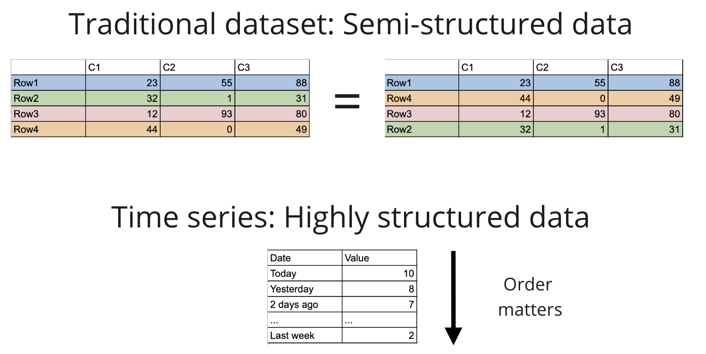
Une série temporelle (Time Series) est une suite d'observations prises à intervalles réguliers dans le temps.
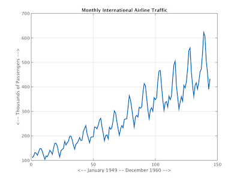
Exemples : cours de bourse 💹, météo ☁️, ventes 💰, données de capteurs 🏗️, activité utilisateur 👤.
1.1 Objectifs
Comprendre une TS = décomposer
Prévoir (forecast) = prédire des valeurs futures
1.2 Dataset d'exemple
df = pd.read_csv('data/drugs.csv') # ventes mensuelles de médicaments
df['date'] = pd.to_datetime(df['date']) # conversion en datetime
df.set_index('date', inplace=True) # date en index
## → 204 lignes, de juillet 1991 à juin 20082) Approche ML classique pour les Time Series
2.1 Construction du dataset (X, y)
En Time Series, il n'y a pas de features externes : X est construit à partir des valeurs passées de y.
y[t]= valeur à prédireX[t] = [y[t-1], y[t-2], ..., y[t-k]]= features autorégressives
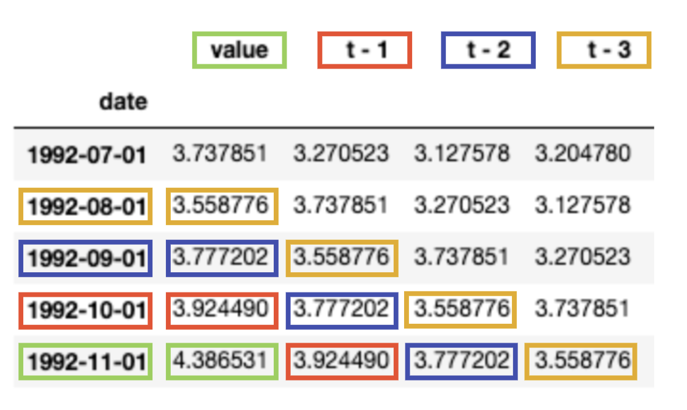
2.2 Train/Test split obligatoirement contigu
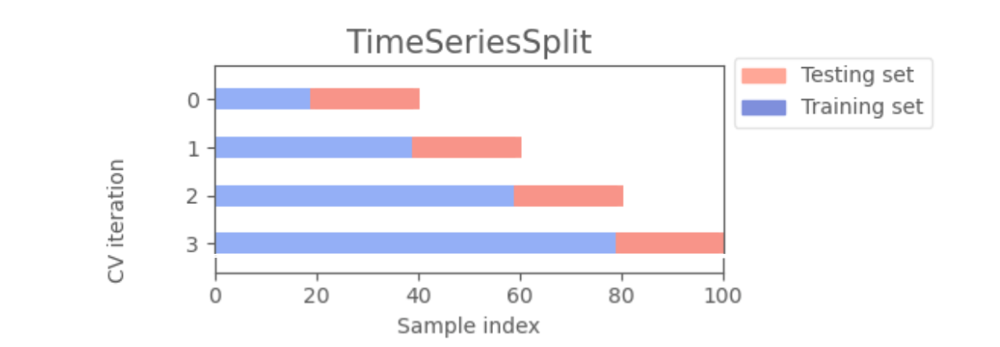
Un train_test_split aléatoire causerait du data leakage
train_size = 0.6
index = round(train_size * df.shape[0])
df_train = df.iloc[:index] # 60% premiers
df_test = df.iloc[index:] # 40% derniers2.3 Baseline — Prédire la valeur précédente
y_pred = df_test.shift(1).dropna() # prédit y[t] = y[t-1]
y_true = df_test[1:]
r2_score(y_true, y_pred) # R² ≈ 0.512.4 Modèle linéaire avec 12 features autorégressives
for i in range(1, 13):
df_train[f't - {i}'] = df_train['value'].shift(i) # crée 12 lags comme features
model = LinearRegression().fit(X_train, y_train)
r2_score(y_test, model.predict(X_test)) # R² ≈ 0.86Seul le 12ᵉ coefficient est vraiment informatif
2.5 Prédire sur un horizon plus long
Pour prédire à horizon H, il faut entraîner un modèle par horizon — ce qui est coûteux et perd en performance à mesure que H augmente.
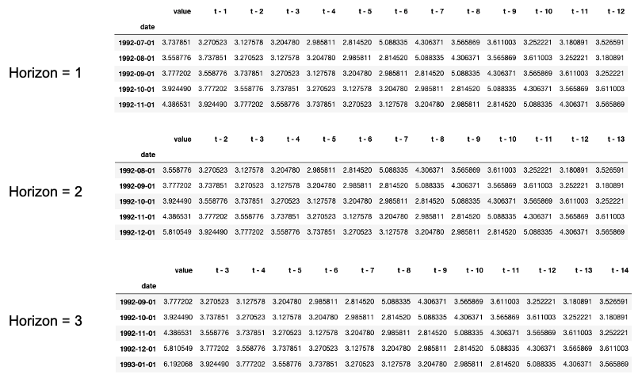
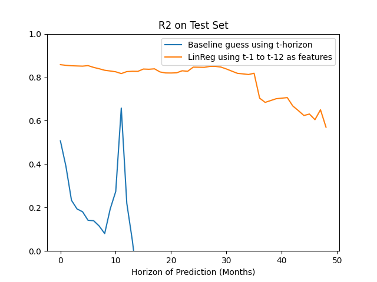
Les performances se dégradent rapidement avec l'horizon
3) Décomposition
La plupart des séries temporelles se décomposent en trois composantes :
- Tendance (Trend) — direction générale à long terme
- Saisonnalité (Seasonal) — patterns récurrents (calendaires ou non)
- Résidus (Irregularities) — bruit restant
Ces composantes peuvent être additives ($y = T + S + R$) ou multiplicatives ($y = T times S times R$).
from statsmodels.tsa.seasonal import seasonal_decompose
## Additive
result_add = seasonal_decompose(df['value'], model='additive')
result_add.plot()
## Multiplicative
result_mul = seasonal_decompose(df['value'], model='multiplicative')
result_mul.plot()Comment choisir entre additif et multiplicatif ? On compare les résidus : ceux qui montrent le moins de structure temporelle indiquent le meilleur modèle.
f, (ax1, ax2) = plt.subplots(1, 2, figsize=(13, 3))
ax1.plot(result_add.resid); ax1.set_title("Additive Residuals")
ax2.plot(result_mul.resid); ax2.set_title("Multiplicative Residuals")Les résidus multiplicatifs ont souvent moins de "notion de temps"
4) Stationnarité
4.1 Définition
Une série est stationnaire quand ses propriétés statistiques (moyenne, variance, autocorrélation) ne changent pas avec le temps.
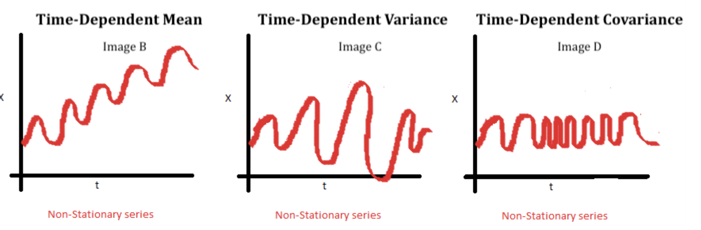
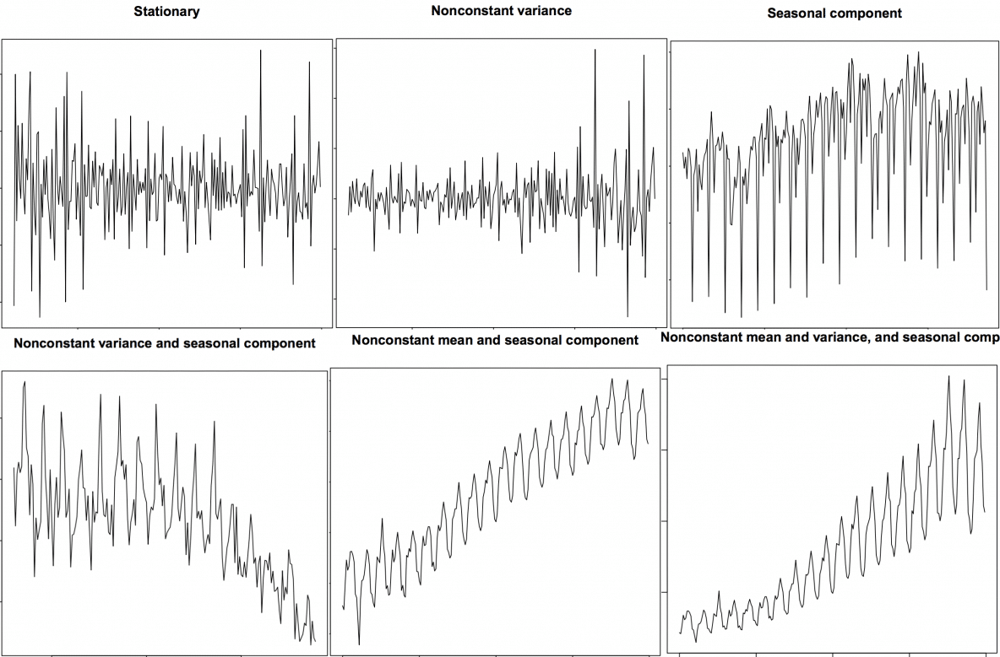
Une série stationnaire contient encore beaucoup d'information !
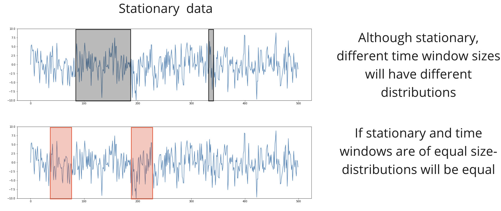
4.2 Tester la stationnarité
Trois méthodes :
- Visuellement — observer si la moyenne/variance semble constante
- Calcul — mesurer moyenne, variance et autocorrélation sur différents intervalles
- Test ADF (Augmented Dickey-Fuller) — test statistique formel
from statsmodels.tsa.stattools import adfuller
adfuller(df['value'])[1] # p-value → 1.0 = non stationnaire
adfuller(result_mul.resid.dropna())[1] # p-value → 1.7e-07 = stationnaire ✅Le test ADF a pour H0 : la série n'est pas stationnaire.
4.3 Comment rendre une série stationnaire ?
Trois approches (combinables) :
- Décomposition — extraire $Y_{resid}$ et modéliser les résidus
- Différenciation (differencing) — $Y_{diff} = Y_t - Y_{t-1}$
- Transformations — log, exp, etc.
5) Autocorrélation
L'autocorrélation mesure la corrélation entre une série $Y(t)$ et une version décalée d'elle-même $Y(t-k)$.
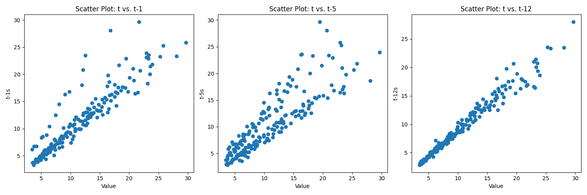
5.1 Fonction d'autocorrélation (ACF)
$ACF(k) = \frac{\sum_{t=k+1}^{n}(X_t - \bar{X})(X_{t-k} - \bar{X})}{\sum_{t=1}^{n}(X_t - \bar{X})^2}$
from statsmodels.graphics.tsaplots import plot_acf
plot_acf(df['value'], lags=50) # graphe ACFLe cône bleu représente l'intervalle de confiance à 95%. Les pics hors du cône sont statistiquement significatifs.
Les pics tous les 12 mois confirment la saisonnalité annuelle
5.2 Attention — Corrélation directe vs indirecte
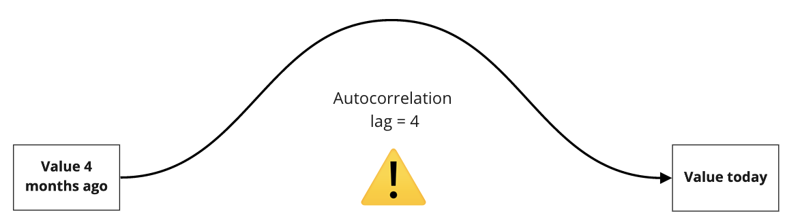
L'ACF mesure la corrélation totale (directe + indirecte). Si $X(t)$ est corrélé avec $X(t-1)$, il est automatiquement corrélé avec $X(t-2)$ par transitivité.
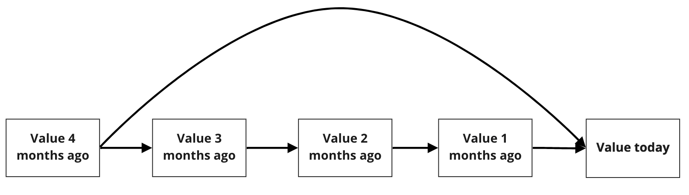
Pour isoler l'influence directe d'un lag spécifique, on utilise la PACF (Partial ACF) via un processus autorégressif (AR).
6) AR — Processus autorégressifs
$Y_t = \alpha + \beta_1 Y_{t-1} + \beta_2 Y_{t-2} + \cdots + \beta_p Y_{t-p} + \epsilon_t$
C'est une régression linéaire multiple où les features sont les valeurs passées de Y. Les coefficients partiels $\beta_i$ isolent l'influence directe de chaque lag.
6.1 PACF — Partial Autocorrelation Function
from statsmodels.graphics.tsaplots import plot_pacf
plot_pacf(df['value'], lags=50, c='r') # graphe PACFLa PACF donne l'influence directe de chaque lag
6.2 Intuition — Analogie des étudiants
ACF = les étudiants trichent en copiant sur leur voisin → les notes déclinent lentement (corrélation indirecte propagée).
PACF = triche interdite → on voit ce que chaque étudiant sait vraiment (corrélation directe uniquement).
6.3 Propriétés d'un processus AR
- Un choc ($epsilon$) se propage loin dans le futur (effet persistant)
- Le processus est "collant" (sticky) — plus qu'un bruit blanc
- Pas nécessairement stationnaire
Exemple : le réchauffement climatique modélisé comme AR(1).
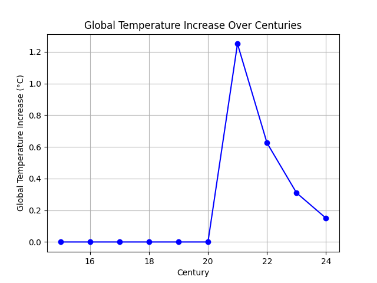
👉 Vidéo explicative AR — 5 min
7) MA — Processus Moving Average
$Y_t = \alpha + \epsilon_t + \phi_1 \epsilon_{t-1} + \phi_2 \epsilon_{t-2} + \cdots + \phi_q \epsilon_{t-q}$
avec $\epsilon \overset{iid}{\sim} \mathcal{N}(0, \sigma)$
Contrairement à AR, MA ne dépend pas des valeurs passées de Y, mais d'une combinaison linéaire de chocs aléatoires passés.
7.1 Propriétés d'un processus MA
- Tout choc a un effet limité de durée
q(pas de propagation longue) - Le processus tend à rester autour de la moyenne $\alpha$
- Toujours stationnaire
- L'ordre q se lit sur le nombre de coefficients significatifs dans l'ACF
7.2 Exemple — Système de chauffage central
Un système garanti pour absorber un choc en 2 minutes : $\Delta°C_t = \epsilon_t + 0.5 \epsilon_{t-1}$
Si quelqu'un ouvre la porte à la minute 1 ($epsilon_1 = -5°C$) :
- Minute 1 : $\Delta°C = -5$ (le froid entre)
- Minute 2 : $\Delta°C = 0.5 \times (-5) = -2.5$ (le système chauffe)
- Minute 3 : $\Delta°C = 0$ (retour à la normale — pas de propagation)
👉 Vidéo : Lemonade demand 🍋 — 5 min
8) ARMA — Auto Regressive Moving Average
La plupart des séries réelles combinent les deux processus :
$ARMA(p,q) : Y_t = \alpha + \beta_1 Y_{t-1} + \cdots + \beta_p Y_{t-p} + \phi_1 \epsilon_{t-1} + \cdots + \phi_q \epsilon_{t-q}$
8.1 Choisir les hyperparamètres p et q
On compte le nombre de lags significatifs (hors du cône de confiance, en excluant le lag 0) :
- p = lags significatifs sur la PACF → composante AR
- q = lags significatifs sur l'ACF → composante MA
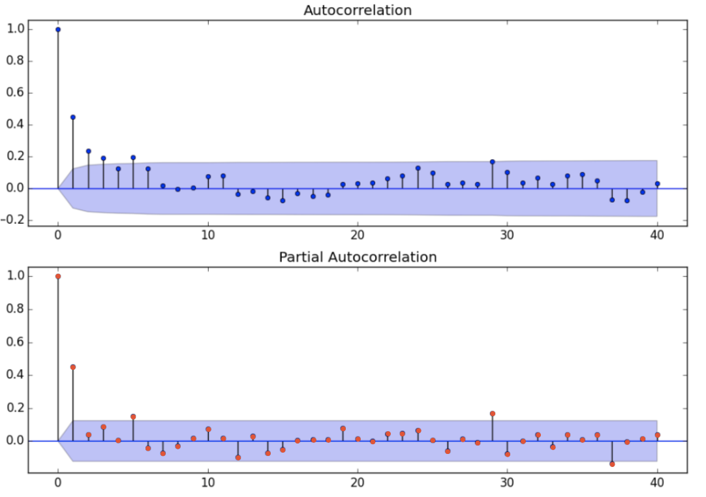
Pourquoi q sur l'ACF ?
9) ARIMA — Auto Regressive Integrated Moving Average
9.1 Le "I" = Differencing
Pour rendre une série stationnaire, on peut la différencier :
- Ordre 1 : $Y^{(1)}_t = Y_t - Y_{t-1}$ (ex : croissance du PIB)
- Ordre 2 : $Y^{(2)}_t = Y^{(1)}_t - Y^{(1)}_{t-1}$ (ex : accélération du PIB)
y_diff = df['value'].diff(1) # différenciation d'ordre 1
y_diff_diff = df['value'].diff(1).diff(1) # ordre 2
## Estimation automatique de d
from pmdarima.arima.utils import ndiffs
ndiffs(df['linearized']) # retourne 1 → d=1 suffitEn général, d=1 suffit.
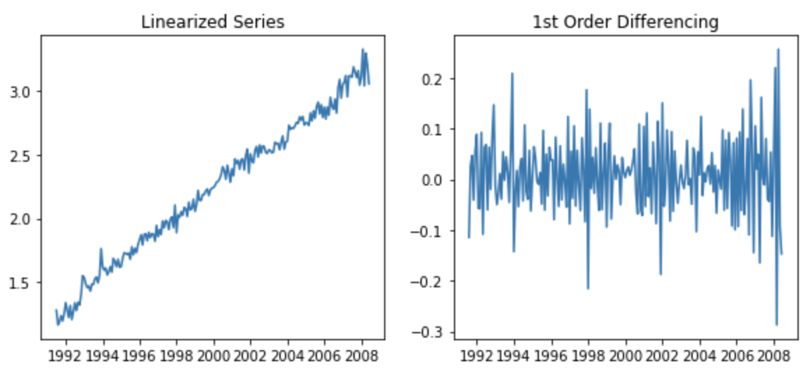
9.2 Formule ARIMA
$Y^{(d)}_t = \alpha + \beta_1 Y^{(d)}_{t-1} + \cdots + \beta_p Y^{(d)}_{t-p} + \phi_1 \epsilon_{t-1} + \cdots + \phi_q \epsilon_{t-q}$
| Composante | Rôle | Propriété clé |
|---|---|---|
| AR(p) | Combinaison linéaire de p lags de Y | Un choc se propage loin dans le futur |
| I(d) | Différenciation d'ordre d | Rend la série stationnaire |
| MA(q) | Combinaison linéaire de q chocs aléatoires | Effet limité dans le temps, toujours stationnaire |
La différenciation tend à transformer les processus AR en processus MA.
9.3 Workflow complet — Appliquer ARIMA
Étape 1 — Dé-saisonnaliser et linéariser
## Retirer la saisonnalité (division par composante saisonnière multiplicative)
df['deseasonalized'] = df['value'].values / result_mul.seasonal
## Retirer la tendance exponentielle (log)
df['linearized'] = np.log(df['deseasonalized'])Étape 2 — Vérifier la stationnarité après différenciation
print('p-value zero-diff: ', adfuller(df['linearized'])[1]) # 0.71 → non stationnaire
print('p-value first-diff: ', adfuller(df['linearized'].diff().dropna())[1]) # 1e-09 → stationnaire ✅
## → d = 1Étape 3 — Déterminer p et q via ACF/PACF
y_diff = df['linearized'].diff().dropna()
fig, axes = plt.subplots(1, 3, figsize=(16, 2.5))
axes[0].plot(y_diff); axes[0].set_title('1st Order Differencing')
plot_acf(y_diff, ax=axes[1]) # → q = 1
plot_pacf(y_diff, ax=axes[2], c='r') # → p = 2Étape 4 — Fit ARIMA
from statsmodels.tsa.arima.model import ARIMA
arima = ARIMA(df['linearized'], order=(2, 1, 1), trend='t')
arima = arima.fit()
arima.summary() # AIC = -572.65Étape 5 — GridSearch avec auto_arima
import pmdarima as pm
smodel = pm.auto_arima(df['linearized'],
start_p=1, max_p=2,
start_q=1, max_q=2,
trend='t', seasonal=False,
trace=True)
## Best model: ARIMA(2,1,0) — AIC ≈ -562.7Quand plusieurs modèles ont des AIC similaires, choisir le plus simple
9.4 Évaluer les performances
## Train/Test
train = df['linearized'][0:150]
test = df['linearized'][150:]
arima = ARIMA(train, order=(2, 1, 0), trend='t').fit()
## Forecast avec intervalles de confiance
results = arima.get_forecast(len(test), alpha=0.05)
forecast = results.predicted_mean
confidence_int = results.conf_int().values9.5 Recomposer la série originale
⚠️ Les prédictions sont dans l'espace transformé (linearisé). Il faut inverser les transformations (exp + saisonnalité).
forecast_recons = np.exp(forecast) * result_mul.seasonal[150:] # inverse log + remet la saisonnalité
train_recons = np.exp(train) * result_mul.seasonal[0:150]
test_recons = np.exp(test) * result_mul.seasonal[150:]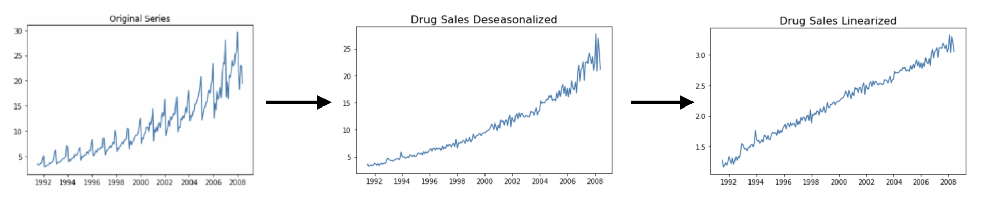
9.6 Vérifier les résidus
residuals = pd.DataFrame(arima.resid)
residuals.plot(title="Residuals") # variance constante → homoscédastique ✅
residuals.plot(kind='kde', title='Density') # distribution ~ normale ✅Si les résidus sont homoscédastiques et normaux → on peut faire confiance aux intervalles de confiance.
9.7 Méthode de Box-Jenkins (workflow complet)
- Appliquer des transformations pour rendre la série stationnaire (dé-trending, log, differencing)
- Garder trace de l'ordre
dde différenciation — ne pas sur-différencier - Confirmer la stationnarité (visuellement, ACF, test ADF)
- Lire
psur la PACF etqsur l'ACF - Fit les données originales (non-différenciées) avec ARIMA(p, d, q)
- Tester quelques variantes autour de ces ordres
- Si AIC similaires → choisir le modèle le plus simple
- Inspecter les résidus : si bruit blanc → terminé
- Sinon → itérer (autres transformations, ajuster d, p, q)
- Comparer avec
auto_arima
Règles détaillées : [Box-Jenkins rules (1)]
9.8 Critère AIC (Akaike Information Criterion)
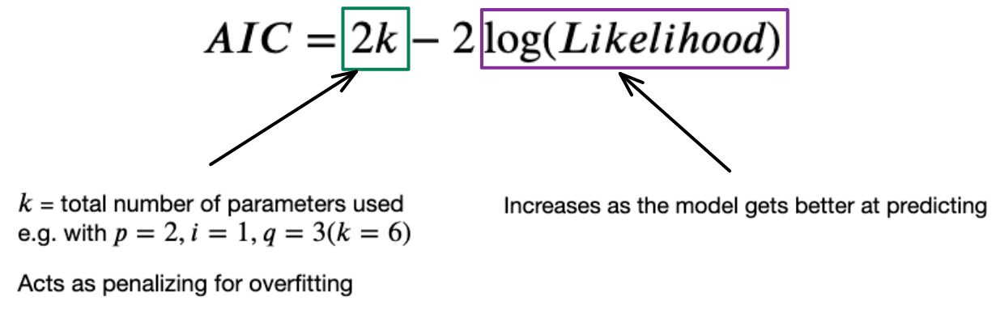
L'AIC pénalise la complexité du modèle : plus l'AIC est bas, meilleur est le compromis entre fit et simplicité. C'est la métrique principale pour comparer des modèles ARIMA.
10) SARIMA — Seasonal ARIMA (optionnel)
SARIMA étend ARIMA en modélisant explicitement la saisonnalité, ce qui évite de dé-saisonnaliser manuellement.
10.1 Différenciation saisonnière
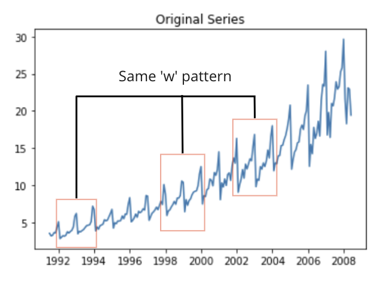
On applique la différenciation à deux niveaux :
- Normal : $Y_{diff} = Y_t - Y_{t-1}$ (lag individuel)
- Saisonnier : $Y_{sdiff} = Y_t - Y_{t-m}$ avec $m = 12$ (lag annuel)
df['log'] = np.log(df['value'])
df['log'].diff(1) # différenciation normale
df['log'].diff(12) # différenciation saisonnière (période 12)
df['log'].diff(12).diff(1) # les deux combinées10.2 Les 7 hyperparamètres
SARIMA(p, d, q)(P, D, Q)[S]
| Paramètre | Niveau | Rôle |
|---|---|---|
| p, d, q | Lag individuel | AR, Integration, MA classiques |
| P, D, Q | Lag saisonnier | AR, Integration, MA saisonniers |
| S | Période | Taille de la fenêtre saisonnière (ex : 12 pour annuel) |
Seul S doit être choisi manuellement.
10.3 Implémentation
import pmdarima as pm
smodel = pm.auto_arima(train, seasonal=True, m=12,
start_p=0, max_p=1, max_d=1, start_q=0, max_q=1,
start_P=0, max_P=2, max_D=1, start_Q=0, max_Q=2,
trace=True)
## Best model: ARIMA(0,1,1)(1,0,2)[12]from statsmodels.tsa.statespace.sarimax import SARIMAX
sarima = SARIMAX(train, order=(0, 1, 1), seasonal_order=(2, 0, 2, 12))
sarima = sarima.fit()
results = sarima.get_forecast(len(test), alpha=0.05)
forecast = results.predicted_mean
confidence_int = results.conf_int()## Recomposer (inverse du log)
forecast_recons = pd.Series(np.exp(forecast), index=test.index)👉 Blog post sur les hyperparamètres SARIMA
11) Autres modèles de Time Series
- SARIMAX — comme SARIMA mais avec des variables exogènes (ex : prévisions météo pour prédire les prix de l'énergie)
- Facebook Prophet — modèle additif développé par Meta, facile à utiliser
- Exponential Smoothing (ETS) — moyenne mobile avec mémoire exponentiellement décroissante
- Holt's Trend-Corrected — ETS avec correction de tendance linéaire
- Holt-Winter's — ajoute la saisonnalité à Holt
👉 Forecasting: Principles and Practice — Hyndman & Athanasopoulos
📚 Bibliographie
- 👉 Academic slides — Penn State
- 👉 Chaîne YouTube TS — ritvikmath
- 👉 Time Series Analysis Blog 1/2 — Concepts
- 👉 Time Series Analysis Blog 2/2 — ARIMA
- 👉 Yule-Walker equations — Advanced
- 📚 Box-Jenkins rules (1) et (2)
🏋️ Challenges
Appliquer le workflow Box-Jenkins complet sur un dataset réel : décomposition, stationnarisation, choix de p/d/q via ACF/PACF, fit ARIMA/SARIMA, évaluation et recomposition.
- 🧭 Introduction
- 1. Approche ML classique pour les séries temporelles
- 2. Décomposition
- 3. Stationnarité
- 4. Autocorrélation
- 5. AR — Processus Autorégressif
- 6. MA — Processus Moving Average
- 7. ARMA — Combinaison AR + MA
- 8. ARIMA — AR Integrated MA
- 9. SARIMA — ARIMA avec Saisonnalité
- 10. Autres modèles de séries temporelles
- 🎯 Questions de vérification
- 📌 TL;DR
🧭 Introduction
Une série temporelle (time series), c'est simplement une liste de valeurs mesurées régulièrement dans le temps. Pas tous les jours, pas au hasard — à intervalles fixes : toutes les heures, tous les mois, tous les ans.
Exemples concrets : le prix du pétrole chaque jour, le nombre de passagers aériens chaque mois, la température quotidienne relevée par une station météo.
Notre analogie fil rouge tout au long du cours : imagine que tu relèves la température extérieure chaque jour pendant un an. Tu obtiens 365 valeurs dans l'ordre. Pas question de les mélanger — le 15 janvier vient avant le 16 janvier, et le mois d'été est toujours plus chaud. C'est ça, une série temporelle.
A retenir absolument
- L'ordre du temps est sacré — ne jamais mélanger les données (pas de shuffle).
- La stationnarité est la condition de base — la plupart des modèles exigent que la série soit "stable" dans le temps (moyenne et variance constantes). Il faut la transformer si ce n'est pas le cas.
- ACF et PACF sont tes deux outils de diagnostic — ils permettent de lire les paramètres du modèle directement sur un graphe.
- AR = mémoire longue, MA = mémoire courte — deux façons différentes de capturer l'histoire d'une série.
- ARIMA = AR + différenciation + MA — le modèle classique qui combine tout.
Mini-plan du cours
- Approche ML classique pour les séries temporelles
- Décomposition (tendance + saisonnalité + résidus)
- Stationnarité et comment l'obtenir
- Autocorrélation (ACF et PACF)
- Modèles AR, MA, ARMA
- ARIMA — le modèle complet
- SARIMA — ARIMA avec saisonnalité
- Autres modèles (Prophet, ETS…)
1. Approche ML classique pour les séries temporelles
1.1 Construire un dataset (X, y) depuis une série
En machine learning classique, tu as des colonnes features (X) et une cible (y). Mais dans une série temporelle, tu n'as qu'une seule colonne de valeurs. Alors comment créer X ?
La réponse : on utilise les valeurs passées comme features. On appelle ça des lags.
Exemple avec la température : pour prédire la température du jour J, on utilise les températures des jours J-1, J-2, J-3… comme variables explicatives.
import pandas as pd
# On crée 12 features "lag" : la valeur d'hier, d'avant-hier, etc.
for i in range(1, 13):
df_train[f't - {i}'] = df_train['value'].shift(i) # décale la série de i pas
# On obtient 12 nouvelles colonnes : "t - 1", "t - 2", ..., "t - 12"Avec des ventes de médicaments, le lag 12 (valeur du même mois l'an dernier) est souvent le plus informatif — la saisonnalité annuelle domine.
1.2 Le Train/Test split : JAMAIS de shuffle
C'est la règle numéro 1, et c'est une différence fondamentale avec le ML classique.
Pourquoi ? Si tu mélanges les données et que tu mets des valeurs de décembre dans ton train set pour prédire octobre, tu "regardes dans le futur". C'est du data leakage — le modèle triche sans que tu le saches.
La règle : le train set = les premières observations dans le temps. Le test set = les dernières.
train_size = 0.6
index = round(train_size * df.shape[0]) # on calcule l'index de coupure
df_train = df.iloc[:index] # 60% des premières données → train
df_test = df.iloc[index:] # 40% des dernières données → test
# ⚠️ Jamais de train_test_split(shuffle=True) ici !Ne jamais utiliser train_test_split de sklearn avec ses paramètres par défaut sur une série temporelle. C'est l'erreur la plus fréquente et elle fausse complètement les résultats.
1.3 Baseline simple : prédire la valeur d'hier
Avant tout modèle sophistiqué, on commence par une baseline naïve : "la valeur de demain = la valeur d'aujourd'hui".
y_pred = df_test.shift(1).dropna() # prédit y[t] = y[t-1]
y_true = df_test[1:]
from sklearn.metrics import r2_score
r2_score(y_true, y_pred) # donne R² ≈ 0.51 → pas terribleUn bon modèle doit faire mieux que cette baseline.
1.4 Prédire sur plusieurs pas dans le futur
Si tu veux prédire H pas dans le futur (pas juste J+1 mais J+H), il faut entraîner un modèle différent par horizon. C'est coûteux et les performances se dégradent rapidement plus H est grand.
C'est une limite importante de l'approche ML classique sur les séries temporelles — les modèles statistiques comme ARIMA gèrent mieux les horizons longs.
2. Décomposition
2.1 Les trois composantes d'une série temporelle
Toute série temporelle peut se décomposer en trois couches :
- Tendance (Trend) — la direction générale sur le long terme. Exemple : les ventes augmentent chaque année.
- Saisonnalité (Seasonal) — des patterns qui se répètent régulièrement. Exemple : il fait toujours plus chaud en été.
- Résidus (Residuals) — ce qui reste une fois qu'on a enlevé la tendance et la saisonnalité. C'est le "bruit".
2.2 Modèle additif vs multiplicatif
Il y a deux façons de combiner ces trois composantes :
Modèle additif — les composantes s'ajoutent :
Modèle multiplicatif — les composantes se multiplient :
Comment choisir ? Regarde si l'amplitude des oscillations saisonnières augmente avec le niveau général de la série. Si oui (ex : les ventes d'été sont 2× les ventes d'hiver, et cet écart grandit avec les années), utilise le modèle multiplicatif.
from statsmodels.tsa.seasonal import seasonal_decompose
# Décomposition additive
result_add = seasonal_decompose(df['value'], model='additive')
# Décomposition multiplicative
result_mul = seasonal_decompose(df['value'], model='multiplicative')
result_mul.plot() # affiche les 4 graphes : série, tendance, saisonnalité, résidus
# Accéder aux composantes
result_mul.trend # la tendance extraite
result_mul.seasonal # la composante saisonnière
result_mul.resid # les résidus (ce qui reste)Astuce pour choisir : compare les résidus des deux modèles. Celui dont les résidus ressemblent le moins à une série temporelle (moins de structure visible) est le meilleur.
3. Stationnarité
3.1 C'est quoi une série stationnaire ?
Une série est stationnaire quand ses propriétés statistiques ne changent pas avec le temps :
- Sa moyenne est constante (pas de tendance haussière ou baissière)
- Sa variance est constante (les oscillations restent de même amplitude)
- Son autocorrélation (lien entre valeurs proches) ne dépend que de l'écart de temps, pas du moment
Exemple avec notre thermomètre : la température moyenne de janvier est toujours autour de 5°C, et de juillet toujours autour de 25°C. Cette série n'est pas stationnaire car la moyenne varie selon la saison.
Par contre, les résidus après avoir enlevé la saisonnalité (les petites variations autour de la normale saisonnière) sont souvent stationnaires.
Tous les modèles ARMA/ARIMA supposent que la série est stationnaire. Si elle ne l'est pas, le modèle donnera des résultats faux.
3.2 Comment tester la stationnarité
Trois méthodes, de la plus simple à la plus rigoureuse :
1. Visuellement — la moyenne et la variance semblent-elles constantes sur tout le graphe ?
2. Par calcul — divise la série en plusieurs fenêtres et compare la moyenne et la variance de chaque fenêtre.
3. Test ADF (Augmented Dickey-Fuller) — test statistique formel.
from statsmodels.tsa.stattools import adfuller
p_value = adfuller(df['value'])[1] # on récupère la p-value (2e élément)
print(p_value)
# Si p_value < 0.05 → stationnaire ✅
# Si p_value >= 0.05 → non stationnaire ❌Logique du test ADF :
- $H_0$ (hypothèse nulle) : la série n'est pas stationnaire
- Si $p < 0.05$, on rejette $H_0$ → la série est stationnaire
C'est contre-intuitif : une p-value faible est une bonne nouvelle ici. p < 0.05 signifie qu'on peut rejeter l'hypothèse "pas stationnaire", donc la série est stationnaire.
3.3 Comment rendre une série stationnaire
Trois approches (qu'on peut combiner) :
1. Décomposition — extraire les résidus et ne modéliser que $R$ (les résidus sont souvent stationnaires).
2. Différenciation (differencing) — calculer la différence entre chaque valeur et la précédente :
Avec notre température : au lieu de la température brute (5°C, 6°C, 4°C, 7°C), on calcule la variation quotidienne (+1°C, -2°C, +3°C). Cette série de variations est souvent stationnaire.
y_diff = df['value'].diff(1) # différenciation d'ordre 1 : Y[t] - Y[t-1]
y_diff2 = df['value'].diff(1).diff(1) # différenciation d'ordre 2 (rarement nécessaire)
# Trouver automatiquement l'ordre optimal
from pmdarima.arima.utils import ndiffs
d = ndiffs(df['value']) # retourne 1 → une seule différenciation suffit3. Transformation log — si la série a une tendance exponentielle, appliquer $\log$ la linéarise.
import numpy as np
df['log_value'] = np.log(df['value']) # transforme une croissance exponentielle en linéaireEn pratique, d=1 (une seule différenciation) suffit dans la grande majorité des cas. Ne pas sur-différencier — cela ajoute du bruit inutile.
4. Autocorrélation
4.1 L'idée de base
L'autocorrélation mesure à quel point une valeur de la série est corrélée avec une valeur passée d'elle-même. Le "lag k" désigne un décalage de k pas dans le temps.
Exemple concret : est-ce que la température d'aujourd'hui ressemble à celle d'hier (lag 1) ? D'il y a une semaine (lag 7) ? D'il y a un an (lag 365) ?
4.2 La formule ACF
La fonction d'autocorrélation (ACF) au lag $k$ est :
C'est exactement la formule de corrélation de Pearson, mais appliquée entre la série et elle-même décalée de $k$ pas.
Valeurs possibles : entre -1 et +1. 0 = pas de lien, 1 = lien parfait positif.
from statsmodels.graphics.tsaplots import plot_acf
plot_acf(df['value'], lags=50) # affiche la corrélation pour les 50 premiers lags
# La zone bleue = intervalle de confiance à 95%
# Un pic hors de la zone bleue = corrélation statistiquement significativeSur un graphe ACF des ventes mensuelles, des pics tous les 12 lags confirment la saisonnalité annuelle. La température en juillet ressemble à celle de juillet de l'an dernier.
4.3 Le problème de la corrélation indirecte
L'ACF a un défaut : elle capture les corrélations totales, y compris les corrélations indirectes.
Analogie de la salle de classe : imagine 30 étudiants en rang. Chaque étudiant copie discrètement sur son voisin de gauche. Si tu regardes les notes : l'étudiant en position 1 et l'étudiant en position 5 ont des notes similaires. Mais est-ce parce qu'ils se copient directement ? Non — c'est parce que 1 copie sur 2, qui copie sur 3, qui copie sur 4, qui copie sur 5.
L'ACF détecte cette ressemblance indirecte et la signale, même si le lien est transitif.
Exemple numérique : si la corrélation au lag 1 est 0.8, alors forcément, par transitivité, la corrélation au lag 2 sera non nulle (≈ 0.64), même si la valeur d'avant-hier n'influence pas directement aujourd'hui.
4.4 La PACF — Partial ACF
La PACF (Partial Autocorrelation Function) résout ce problème. Elle mesure uniquement la corrélation directe du lag k, en retirant l'effet des lags intermédiaires.
Analogie suite : si on interdit la triche dans la salle de classe, chaque étudiant répond uniquement avec ce qu'il sait vraiment. C'est la PACF.
from statsmodels.graphics.tsaplots import plot_pacf
plot_pacf(df['value'], lags=50, c='r') # affiche la corrélation directe de chaque lagACF = corrélation totale (directe + indirecte). PACF = corrélation directe uniquement. Cette distinction est cruciale pour choisir les paramètres du modèle.
5. AR — Processus Autorégressif
5.1 La formule
Un processus AR(p) (AutoRégression d'ordre p) dit que la valeur actuelle est une combinaison linéaire des $p$ valeurs passées, plus un bruit aléatoire $\epsilon_t$ :
Traduction des symboles :
- $Y_t$ : la valeur actuelle (ex : température aujourd'hui)
- $\alpha$ : une constante (la moyenne de long terme)
- $\beta_i$ : le coefficient du lag $i$ (son influence directe)
- $p$ : l'ordre — combien de valeurs passées on utilise
- $\epsilon_t$ : le choc aléatoire du moment (bruit blanc)
Exemple numérique AR(1) : supposons que la température suit :
Si hier il faisait 20°C et le bruit d'aujourd'hui est +1°C :
Un AR, c'est exactement une régression linéaire multiple, mais où les features sont les valeurs passées de Y lui-même.
5.2 Propriétés d'un processus AR
Un choc se propage loin dans le futur. Si un événement exceptionnel se produit (vague de froid inattendue), son effet se dissipe lentement, lag après lag. C'est une série avec mémoire longue.
Comment lire le paramètre p : le nombre de lags significatifs (hors du cône de confiance) sur la PACF donne $p$.
6. MA — Processus Moving Average
6.1 La formule
Un processus MA(q) (Moving Average d'ordre q) dit que la valeur actuelle est une combinaison linéaire des $q$ chocs passés (pas des valeurs passées) :
Traduction des symboles :
- $Y_t$ : la valeur actuelle
- $\alpha$ : la moyenne de long terme
- $\epsilon_t$ : le choc aléatoire d'aujourd'hui
- $\epsilon_{t-k}$ : le choc qui s'est produit il y a $k$ pas
- $\phi_k$ : le poids donné au choc passé
- $q$ : l'ordre — combien de chocs passés on retient
6.2 Différence fondamentale avec AR
Dans AR, la valeur dépend des valeurs passées de Y. Dans MA, la valeur dépend des chocs passés (erreurs aléatoires passées).
Conséquence clé : dans un MA(q), un choc a un effet limité dans le temps, qui dure exactement $q$ pas. Après, il disparaît complètement. C'est une série avec mémoire courte.
6.3 Exemple concret — Système de chauffage
Un système de chauffage est conçu pour absorber tout choc en 2 minutes. La variation de température suit :
Quelqu'un ouvre la porte à la minute 1, laissant entrer un courant froid ($\epsilon_1 = -5°C$) :
- Minute 1 : $\Delta T = -5 + 0 = -5°C$ (le froid entre brutalement)
- Minute 2 : $\Delta T = 0 + 0.5 \times (-5) = -2.5°C$ (le système compense partiellement)
- Minute 3 : $\Delta T = 0 + 0.5 \times 0 = 0°C$ (retour à la normale — effet terminé)
Le choc a duré exactement $q = 1$ pas après son apparition, puis s'est effacé.
6.4 Propriétés d'un processus MA
- Un MA est toujours stationnaire (propriété mathématique garantie)
- Comment lire le paramètre q : le nombre de lags significatifs sur l'ACF donne $q$
Résumé : AR = mémoire longue (choc se propage), MA = mémoire courte (choc disparaît vite). La plupart des séries réelles sont un mélange des deux → ARMA.
7. ARMA — Combinaison AR + MA
7.1 La formule
Le modèle ARMA(p, q) combine les deux :
7.2 Choisir p et q
On lit les deux paramètres sur les graphes ACF et PACF, après avoir rendu la série stationnaire :
| Graphe | Paramètre | Explication |
|---|---|---|
| PACF | p (ordre AR) | Compte les lags hors du cône — ce sont des influences directes |
| ACF | q (ordre MA) | Compte les lags hors du cône — ce sont des chocs persistants |
Règle pratique : on exclut toujours le lag 0 (qui est toujours 1 par définition).
Erreur classique : inverser ACF et PACF. ACF → q (MA), PACF → p (AR). Retiens : PACF → P pour p.
8. ARIMA — AR Integrated MA
8.1 Le "I" = Integrated = Différenciation
ARIMA ajoute un "I" à ARMA. Ce "I" signifie Integrated et correspond à la différenciation — l'opération qui rend la série stationnaire.
Rappel — la différenciation d'ordre 1 :
D'ordre 2 (rarement nécessaire) :
Le paramètre $d$ indique combien de fois on différencie.
8.2 La formule ARIMA(p, d, q)
On applique un ARMA(p, q) sur la série différenciée $d$ fois $Y^{(d)}$.
| Composante | Paramètre | Rôle |
|---|---|---|
| AR(p) | $p$ | Mémoire longue — combien de lags directs |
| I(d) | $d$ | Rend la série stationnaire — combien de différenciations |
| MA(q) | $q$ | Mémoire courte — combien de chocs passés |
8.3 Workflow complet pour appliquer ARIMA
Voici les étapes dans l'ordre, de A à Z.
Etape 1 — Dé-saisonnaliser et linéariser
# On retire la saisonnalité en divisant par la composante saisonnière
df['deseasonalized'] = df['value'].values / result_mul.seasonal
# On retire la tendance exponentielle avec un log
import numpy as np
df['linearized'] = np.log(df['deseasonalized'])Etape 2 — Trouver d : combien de différenciations ?
from statsmodels.tsa.stattools import adfuller
# Sans différenciation
p0 = adfuller(df['linearized'])[1]
print('p-value sans diff:', p0) # ex: 0.71 → non stationnaire ❌
# Après une différenciation
p1 = adfuller(df['linearized'].diff().dropna())[1]
print('p-value après diff(1):', p1) # ex: 1e-09 → stationnaire ✅
# → d = 1 suffit
# Ou automatiquement avec pmdarima
from pmdarima.arima.utils import ndiffs
d = ndiffs(df['linearized']) # retourne directement l'ordre optimalEtape 3 — Lire p et q sur ACF/PACF
import matplotlib.pyplot as plt
from statsmodels.graphics.tsaplots import plot_acf, plot_pacf
y_diff = df['linearized'].diff().dropna() # série différenciée une fois
fig, axes = plt.subplots(1, 3, figsize=(16, 2.5))
axes[0].plot(y_diff); axes[0].set_title('Série différenciée')
plot_acf(y_diff, ax=axes[1]) # → q = nombre de lags significatifs (ex: 1)
plot_pacf(y_diff, ax=axes[2], c='r') # → p = nombre de lags significatifs (ex: 2)
plt.show()Etape 4 — Entraîner le modèle ARIMA
from statsmodels.tsa.arima.model import ARIMA
# On entraîne sur les données NON différenciées (ARIMA s'en charge lui-même)
arima = ARIMA(df['linearized'], order=(2, 1, 1), trend='t') # p=2, d=1, q=1
arima = arima.fit()
arima.summary() # affiche les coefficients, AIC, tests statistiquesRemarque importante : on passe à ARIMA les données brutes (avant différenciation), pas les données différenciées. ARIMA applique lui-même les d différenciations en interne.
Etape 5 — Chercher les meilleurs paramètres automatiquement
Plutôt que de lire manuellement les graphes ACF/PACF, auto_arima fait une recherche automatique (grid search sur p, d, q) en minimisant l'AIC.
import pmdarima as pm
model = pm.auto_arima(df['linearized'],
start_p=1, max_p=2, # plage de recherche pour p
start_q=1, max_q=2, # plage de recherche pour q
trend='t',
seasonal=False, # pas de composante saisonnière ici
trace=True) # affiche chaque modèle testé et son AIC
# Affiche par exemple :
# ARIMA(1,1,1) → AIC=-558.4
# ARIMA(2,1,0) → AIC=-562.7 ← meilleur
# ARIMA(2,1,1) → AIC=-572.6 ← encore mieux8.4 Le critère AIC — comment comparer les modèles
L'AIC (Akaike Information Criterion) pénalise les modèles trop complexes :
- $k$ : nombre de paramètres du modèle
- $\hat{L}$ : vraisemblance du modèle (à quel point il "fit" les données)
Règle : plus l'AIC est bas, mieux c'est. L'AIC récompense les modèles qui expliquent bien les données tout en restant simples.
Quand deux modèles ont des AIC proches (différence < 2), choisis le plus simple (moins de paramètres). Un modèle plus simple est plus robuste et moins sujet à l'overfitting.
8.5 Faire des prédictions et évaluer
# Diviser en train/test
train = df['linearized'][0:150]
test = df['linearized'][150:]
# Entraîner sur le train
arima = ARIMA(train, order=(2, 1, 0), trend='t').fit()
# Prédire sur le test avec intervalles de confiance à 95%
results = arima.get_forecast(len(test), alpha=0.05)
forecast = results.predicted_mean # valeurs prédites
conf_int = results.conf_int().values # bornes basse et haute de l'intervalle8.6 Recomposer la série originale
Attention : nos prédictions sont dans l'espace transformé (après log et dé-saisonnalisation). Il faut inverser les transformations pour obtenir des prédictions dans l'espace original.
# Inverse du log → exp
# Remise de la saisonnalité → multiplication par la composante saisonnière
forecast_recons = np.exp(forecast) * result_mul.seasonal[150:] # prédictions reconstruites
train_recons = np.exp(train) * result_mul.seasonal[0:150] # train reconstruit
test_recons = np.exp(test) * result_mul.seasonal[150:] # test reconstruitOublier de recomposer est une erreur très fréquente. Si tu as appliqué log + dé-saisonnalisation avant le modèle, tu dois appliquer exp + re-saisonnalisation après. C'est symétrique.
8.7 Vérifier les résidus
Les résidus (différence entre les vraies valeurs et les prédictions sur le train set) doivent ressembler à du bruit blanc :
- Homoscédastiques : variance constante dans le temps
- Distribution normale : centrés sur zéro
residuals = pd.DataFrame(arima.resid)
residuals.plot(title="Résidus") # variance constante ? ✅
residuals.plot(kind='kde', title='Distribution') # forme de cloche ? ✅Si les résidus sont bien du bruit blanc, les intervalles de confiance de tes prédictions sont fiables.
8.8 Le workflow Box-Jenkins — vue d'ensemble
Le workflow complet pour appliquer ARIMA, étape par étape :
- Appliquer des transformations pour rendre la série stationnaire (log, dé-saisonnalisation, différenciation)
- Noter l'ordre $d$ de différenciation utilisé — ne pas sur-différencier
- Confirmer la stationnarité : visuellement + test ADF ($p < 0.05$)
- Lire $p$ sur la PACF et $q$ sur l'ACF (après différenciation)
- Entraîner ARIMA(p, d, q) sur les données non différenciées
- Tester quelques variantes (p±1, q±1)
- Si AIC similaires → prendre le plus simple
- Inspecter les résidus : ressemblent-ils à du bruit blanc ?
- Si non → itérer (ajuster les transformations, p, d, q)
- Comparer avec
auto_arimapour valider
9. SARIMA — ARIMA avec Saisonnalité
9.1 Pourquoi SARIMA ?
Dans le workflow ARIMA, on a dû dé-saisonnaliser manuellement les données avant de modéliser. C'est contraignant. SARIMA (Seasonal ARIMA) intègre directement la saisonnalité dans le modèle — plus besoin de la retirer à la main.
9.2 La différenciation saisonnière
En plus de la différenciation classique (lag 1), on ajoute une différenciation saisonnière (lag $m$, avec $m$ = période saisonnière) :
Avec $m = 12$ pour des données mensuelles avec saisonnalité annuelle.
import numpy as np
df['log'] = np.log(df['value'])
df['log'].diff(1) # différenciation classique : Y[t] - Y[t-1]
df['log'].diff(12) # différenciation saisonnière : Y[t] - Y[t-12]
df['log'].diff(12).diff(1) # les deux combinées (souvent la plus efficace)9.3 Les 7 paramètres de SARIMA
SARIMA(p, d, q)(P, D, Q)[S]
| Paramètre | Niveau | Rôle |
|---|---|---|
| $p$ | Individuel | Ordre AR classique |
| $d$ | Individuel | Ordre de différenciation classique |
| $q$ | Individuel | Ordre MA classique |
| $P$ | Saisonnier | Ordre AR saisonnier |
| $D$ | Saisonnier | Ordre de différenciation saisonnière |
| $Q$ | Saisonnier | Ordre MA saisonnier |
| $S$ | — | Taille de la période saisonnière (ex : 12) |
Seul $S$ doit être choisi manuellement (c'est la période de ta saisonnalité). Les 6 autres peuvent être trouvés automatiquement avec auto_arima(seasonal=True, m=S).
9.4 Implémentation avec auto_arima puis SARIMAX
import pmdarima as pm
# Recherche automatique des paramètres saisonniers
smodel = pm.auto_arima(train,
seasonal=True, # activer la composante saisonnière
m=12, # période = 12 mois (saisonnalité annuelle)
start_p=0, max_p=1,
max_d=1,
start_q=0, max_q=1,
start_P=0, max_P=2,
max_D=1,
start_Q=0, max_Q=2,
trace=True) # affiche les modèles testés
# → Trouve par exemple ARIMA(0,1,1)(1,0,2)[12]from statsmodels.tsa.statespace.sarimax import SARIMAX
# Entraînement avec les paramètres trouvés
sarima = SARIMAX(train,
order=(0, 1, 1), # p, d, q non-saisonniers
seasonal_order=(2, 0, 2, 12)) # P, D, Q saisonniers + S=12
sarima = sarima.fit()
# Prédictions
results = sarima.get_forecast(len(test), alpha=0.05)
forecast = results.predicted_mean
conf_int = results.conf_int()# Recomposer (si on avait appliqué un log avant)
import pandas as pd
forecast_recons = pd.Series(np.exp(forecast), index=test.index)10. Autres modèles de séries temporelles
Une fois ARIMA/SARIMA maîtrisés, il existe d'autres approches :
| Modèle | Description | Quand l'utiliser |
|---|---|---|
| SARIMAX | SARIMA + variables exogènes | Quand tu as des données externes utiles (ex : météo pour prédire la consommation d'énergie) |
| Facebook Prophet | Modèle additif développé par Meta | Facile à utiliser, gère bien les jours fériés et les ruptures |
| ETS (Exponential Smoothing) | Moyenne pondérée avec poids décroissants | Séries simples sans structure complexe |
| Holt-Winters | ETS + tendance + saisonnalité | Bonne alternative à SARIMA, plus simple à configurer |
En pratique, commence toujours par une baseline naïve, puis ARIMA, puis compare avec Prophet. Plus un modèle est simple, plus il est interprétable et robuste.
🎯 Questions de vérification
Q1. Tu as un dataset de ventes mensuelles de 2010 à 2024 (168 observations). Comment coupes-tu en train/test ? Pourquoi ne peux-tu pas utiliser train_test_split de sklearn ?
Q2. Tu lances adfuller(df['value'])[1] et obtiens p_value = 0.42. Que cela signifie-t-il ? Que fais-tu ensuite pour rendre la série apte à être modélisée avec ARIMA ?
Q3. Sur le graphe PACF de ta série différenciée, les lags 1 et 2 dépassent le cône de confiance, mais pas le lag 3. Sur le graphe ACF, seul le lag 1 dépasse le cône. Quel modèle ARIMA(p, d, q) proposes-tu (en supposant d=1) ?
Q4. Ton modèle ARIMA prédit des valeurs, mais les résidus montrent une variance qui augmente avec le temps (hétéroscédasticité). Que cela signifie-t-il pour tes intervalles de confiance ?
📌 TL;DR
- Une série temporelle est une suite de valeurs ordonnées dans le temps — l'ordre est sacré, pas de shuffle.
- Le Train/Test split est toujours contigu : les premières observations en train, les dernières en test.
- La décomposition révèle trois couches : Tendance + Saisonnalité + Résidus (additif ou multiplicatif).
- La stationnarité (moyenne et variance constantes) est requise par ARIMA — tester avec
adfuller(), corriger avec.diff()ounp.log(). - L'ACF mesure la corrélation totale (directe + indirecte) → donne $q$ (ordre MA).
- La PACF mesure la corrélation directe uniquement → donne $p$ (ordre AR).
- AR(p) = mémoire longue (choc se propage), MA(q) = mémoire courte (choc s'efface après $q$ pas).
- ARIMA(p, d, q) = AR + différenciation + MA — modèle standard pour séries non saisonnières.
- SARIMA(p,d,q)(P,D,Q)[S] = ARIMA avec saisonnalité intégrée, évite la dé-saisonnalisation manuelle.
- Toujours recomposer après prédiction : inverser toutes les transformations appliquées (exp, saisonnalité…).
A. Concepts du cours
Spécificités des séries temporelles
Une série temporelle est une suite d'observations indexées dans le temps : prix d'une action minute par minute, ventes mensuelles, température horaire. Quatre caractéristiques qui la distinguent du ML "classique" :
- Ordre temporel : on ne peut pas mélanger les observations comme on le ferait pour du tabulaire i.i.d. Le futur dépend du passé.
- Auto-corrélation : la valeur d'aujourd'hui est corrélée à celle d'hier, pas indépendante.
- Tendance : croissance ou décroissance long terme (ex : ventes en hausse depuis 5 ans).
- Saisonnalité : motifs périodiques (jour/semaine/mois/an).
Erreur fondamentale à ne JAMAIS faire : utiliser un train_test_split aléatoire sur des données temporelles. Cela mélange passé et futur — vous testez sur des dates antérieures à votre train. Le score est artificiellement bon, mais le modèle ne peut pas être déployé. Toujours splitter chronologiquement : train sur 2020-2023, validation sur 2024, test sur 2025. C'est non négociable.
Décomposition tendance/saisonnalité/résidu
Une série peut souvent s'écrire comme la somme (ou le produit) de trois composantes :
- $T_t$ : tendance (lente, monotone)
- $S_t$ : saisonnalité (périodique)
- $R_t$ : résidu (bruit)
from statsmodels.tsa.seasonal import seasonal_decompose # outil de décomposition
import matplotlib.pyplot as plt
# model="additive" : on suppose y = T + S + R (variations de taille stable)
# model="multiplicative" : on suppose y = T * S * R (variations qui grandissent avec le niveau)
# period=12 : la saisonnalité se répète tous les 12 points (mensuel si données mensuelles)
result = seasonal_decompose(series, model="additive", period=12)
result.plot() # 4 sous-plots : observed, trend, seasonal, residual
plt.show()Cette décomposition est l'EDA fondamental d'une série temporelle. Elle révèle :
- Y a-t-il une vraie tendance ou juste du bruit ?
- Y a-t-il une saisonnalité ? Mensuelle, hebdomadaire ?
- Le résidu est-il "blanc" (sans pattern) ou y a-t-il encore de la structure ?
Analogie : décomposer une série temporelle, c'est comme analyser un signal audio en harmoniques. Vous séparez la note principale (tendance), les harmoniques périodiques (saisonnalité), et le bruit de fond (résidu). Une fois séparés, vous pouvez modéliser chaque composant indépendamment.
Stationnarité et ACF/PACF
Une série est stationnaire si ses statistiques (moyenne, variance) ne changent pas dans le temps. C'est une hypothèse cruciale pour ARIMA.
Tests de stationnarité :
- ADF (Augmented Dickey-Fuller) : H₀ = non stationnaire. p < 0.05 → stationnaire.
- KPSS : H₀ = stationnaire. p < 0.05 → non stationnaire.
from statsmodels.tsa.stattools import adfuller, kpss
result = adfuller(series)
print(f"ADF p-value: {result[1]:.4f}")Si la série n'est pas stationnaire, on la différencie : $y'_t = y_t - y_{t-1}$. Cela enlève souvent la tendance. On peut différencier plusieurs fois si nécessaire.
series_diff = series.diff().dropna()ACF (Autocorrelation Function) : corrélation entre $y_t$ et $y_{t-k}$ pour différents $k$.
PACF (Partial ACF) : corrélation entre $y_t$ et $y_{t-k}$ après avoir contrôlé pour $y_{t-1}, ..., y_{t-k+1}$.
from statsmodels.graphics.tsaplots import plot_acf, plot_pacf
plot_acf(series, lags=40)
plot_pacf(series, lags=40)L'ACF/PACF révèlent la structure temporelle : lags significatifs, périodicité, ordre de l'ARIMA à choisir.
ARIMA et SARIMA
ARIMA(p, d, q) combine trois composants :
- AR(p) : autorégressif d'ordre $p$ → $y_t$ dépend de $y_{t-1}, \ldots, y_{t-p}$
- I(d) : différenciation d'ordre $d$ pour rendre stationnaire
- MA(q) : moyenne mobile d'ordre $q$ → dépend des erreurs $\epsilon_{t-1}, \ldots, \epsilon_{t-q}$
Que veut dire chaque terme en français ?
- $y_t$ : la valeur à prédire à l'instant $t$ (ex : ventes du mois de mars)
- $\mu$ : une constante, le niveau moyen de la série
- $\phi_i$ : les coefficients autorégressifs. $\phi_1 = 0.7$ signifie "la valeur d'hier compte pour 70% dans celle d'aujourd'hui"
- $y_{t-i}$ : les valeurs passées (1 jour avant, 2 jours avant, ..., p jours avant)
- $\epsilon_t$ : le bruit résiduel à l'instant $t$ — ce que le modèle n'explique pas
- $\theta_j$ : les coefficients MA qui corrigent les erreurs passées
- $\epsilon_{t-j}$ : les erreurs de prédiction des instants précédents
Intuitivement : ARIMA dit "la valeur de demain est une combinaison pondérée du passé récent + une correction basée sur mes erreurs récentes". AR capte l'inertie, MA capte la mémoire du bruit.
SARIMA(p,d,q)(P,D,Q,s) ajoute une composante saisonnière de période $s$ (12 pour mensuel, 52 pour hebdomadaire). (P,D,Q) sont les ordres saisonniers appliqués aux lags espacés de $s$ — par exemple une valeur du mois d'avril est liée à celle d'avril de l'année précédente.
from statsmodels.tsa.arima.model import ARIMA
from statsmodels.tsa.statespace.sarimax import SARIMAX
# ARIMA(p=2, d=1, q=1) :
# p=2 : on regarde les 2 derniers points (autorégressif)
# d=1 : on différencie une fois pour rendre stationnaire
# q=1 : on utilise la dernière erreur (moyenne mobile)
model = ARIMA(series, order=(2, 1, 1))
result = model.fit() # estime les coefficients par max-vraisemblance
forecast = result.forecast(steps=12) # prédit les 12 prochains pas de temps
# SARIMA mensuel : composante non-saisonnière (1,1,1) + saisonnière (1,1,1,12)
# Le dernier "12" = période saisonnière (12 mois = 1 an)
model = SARIMAX(series, order=(1, 1, 1), seasonal_order=(1, 1, 1, 12))
result = model.fit()Pour choisir les bons paramètres : auto_arima de la librairie pmdarima les sélectionne automatiquement par AIC.
Bonne pratique : commencez toujours par une baseline naïve (y_pred[t] = y[t-1] ou la moyenne saisonnière). Beaucoup de modèles complexes échouent à battre cette baseline triviale, surtout sur des séries financières.
B. Compléments avancés
Prophet et NeuralProphet
Prophet (Facebook, 2017) : une approche moderne de forecast qui décompose la série en :
- $g(t)$ : tendance (logistique ou linéaire)
- $s(t)$ : saisonnalité (Fourier)
- $h(t)$ : effets de jours fériés
- $\epsilon_t$ : bruit
Forces :
- Robuste aux outliers et aux valeurs manquantes
- Auto-tuning : marche bien out-of-the-box
- Holidays : intègre facilement les jours spéciaux
- Intervalles de confiance par défaut
from prophet import Prophet
import pandas as pd
# Prophet impose deux colonnes : "ds" = datestamp, "y" = valeur
df = pd.DataFrame({"ds": dates, "y": values})
# Active automatiquement l'ajustement Fourier pour les saisonnalités annuelle et hebdomadaire
model = Prophet(yearly_seasonality=True, weekly_seasonality=True)
model.add_country_holidays(country_name="FR") # ajoute Noël, 14 juillet, etc.
model.fit(df) # entraînement (~quelques secondes)
# Crée un dataframe futur avec 90 jours supplémentaires à prédire
future = model.make_future_dataframe(periods=90)
forecast = model.predict(future) # yhat, yhat_lower, yhat_upper
model.plot(forecast) # visu avec intervalles de confianceNeuralProphet : version 2024 qui ajoute des composants neuraux pour capturer des patterns non linéaires.
Deep learning : LSTM, TFT, N-BEATS
Pour des séries complexes (multi-variées, longues, non linéaires), le DL peut battre ARIMA et Prophet.
LSTM : la baseline DL classique. Marche raisonnablement mais nécessite beaucoup de données.
N-BEATS (ElementAI, 2019) : architecture pure feed-forward, basée sur des blocs résiduels. Performante et interprétable, sans recurrence.
Temporal Fusion Transformer (TFT) (Lim et al., 2019) : transformer spécialisé pour le forecasting multi-variées avec features connues du futur (jours fériés, promotions). State-of-the-art sur de nombreux benchmarks.
# Avec darts (lib forecasting moderne)
from darts import TimeSeries
from darts.models import TFTModel
train = TimeSeries.from_dataframe(df, "date", "value")
model = TFTModel(input_chunk_length=24, output_chunk_length=12)
model.fit(train)
forecast = model.predict(n=12)Recommandation pratique : pour 80% des problèmes de forecast en entreprise, Prophet ou XGBoost suffisent. Le DL n'apporte un gain significatif que sur des séries multi-variées avec beaucoup d'historique (10k+ points) et des dépendances complexes. Avant de sortir un Transformer, essayez les baselines.
Cross-validation temporelle
On ne peut pas faire de KFold standard sur du temporel. La méthode correcte est le walk-forward (ou expanding window) :
Fold 1: train [2020-2021], test [2022 Q1]
Fold 2: train [2020-2022 Q1], test [2022 Q2]
Fold 3: train [2020-2022 Q2], test [2022 Q3]
...from sklearn.model_selection import TimeSeriesSplit
# n_splits=5 : on fait 5 folds chronologiques successifs
# À chaque fold, le train contient TOUT le passé accumulé
tscv = TimeSeriesSplit(n_splits=5)
for train_idx, test_idx in tscv.split(X):
X_train, X_test = X[train_idx], X[test_idx] # train = passé, test = futur immédiat
y_train, y_test = y[train_idx], y[test_idx]
model.fit(X_train, y_train)
score = model.score(X_test, y_test)
# Astuce : logguer le score par fold pour voir si le modèle se dégrade avec le tempsCette méthode reproduit fidèlement la situation réelle de prod : on entraîne sur le passé, on prédit le futur immédiat.
C. Questions de compréhension
Q1 : Pourquoi train_test_split aléatoire est-il un anti-pattern absolu sur des séries temporelles ?
💡 Voir l'indice
leakage temporel.
✅ Voir la réponse
Parce qu'il mélange passé et futur. Vous pouvez vous retrouver à entraîner sur des données de janvier 2024 et tester sur des données de décembre 2023, ce qui revient à "tricher" en regardant le futur pour prédire le passé. Le score sera artificiellement bon, mais en production le modèle ne peut pas voir le futur. La conséquence : votre modèle marche en validation et échoue immédiatement en prod. Toujours splitter chronologiquement : X_train = X[X['date'] < '2024-01-01'] et X_test = X[X['date'] >= '2024-01-01']. Pour la cross-validation, utiliser TimeSeriesSplit qui fait du walk-forward. C'est la première chose vérifiée par un reviewer technique sur tout projet time series. Question d'entretien data science fondamentale pour les rôles forecasting.
Q2 : Vous avez une série journalière avec une forte saisonnalité hebdomadaire ET annuelle. Quel modèle choisir et avec quels paramètres ?
💡 Voir l'indice
SARIMA ou Prophet.
✅ Voir la réponse
Deux bonnes options. Option 1 — SARIMA : utiliser SARIMAX avec deux composants saisonniers est techniquement possible mais lourd. Il faut soit faire deux modèles séparés (différencier annuellement puis modéliser), soit utiliser une période principale (52 semaines = annuelle) et inclure le jour de la semaine en feature exogène. Compliqué à tuner. Option 2 — Prophet : conçu exactement pour ça. Activer weekly_seasonality=True et yearly_seasonality=True, et Prophet décompose automatiquement les deux. C'est en général la meilleure option pour des séries avec multiple saisonnalités. Option 3 — XGBoost avec features : créer des features day_of_week, month, day_of_year, is_holiday, et entraîner XGBoost dessus. Souvent compétitif avec Prophet et plus facile à intégrer dans un pipeline existant. Recommandation : commencer par Prophet pour une baseline rapide, puis comparer avec XGBoost + features. Si les deux échouent, passer aux modèles deep learning (TFT). Question d'entretien forecasting moderne.
Q3 : Vous comparez ARIMA, Prophet, et un LSTM sur la même série. ARIMA gagne. Quelle peut être l'explication ?
💡 Voir l'indice
taille de dataset.
Suite de la réponse
Plusieurs raisons possibles. (1) Petit dataset : si vous avez < 1000 observations, ARIMA est souvent le meilleur. LSTM et Prophet ont besoin de plus de données pour briller. (2) Série très linéaire et stationnaire : ARIMA est conçu pour ces cas et n'a pas de paramètres surperflus à ajuster. LSTM apprendrait essentiellement le même modèle mais avec plus de paramètres et risquerait d'overfitter. (3) Pas de saisonnalité ou patterns simples : Prophet ajoute des composants (Fourier, holidays) qui peuvent introduire du bruit si la série n'a pas vraiment ces patterns. (4) Features exogènes absentes : LSTM et TFT brillent quand vous avez des features supplémentaires (météo, promotions, événements). Sans elles, ils n'ont pas d'avantage. (5) Hyperparamètres mal réglés : LSTM est sensible au tuning ; ARIMA a peu de paramètres et plus simple à régler. Leçon : le "meilleur modèle" dépend du contexte. Toujours commencer par une baseline naïve, puis ARIMA, puis Prophet, puis DL — et arrêter dès qu'on bat la baseline d'un facteur acceptable. Question d'entretien forecasting pratique : un candidat qui dit toujours "LSTM" ou "Transformer" sans contexte n'a pas l'expérience terrain.
Ressources additionnelles
- Forecasting: Principles and Practice (Rob Hyndman, gratuit en HTML) — la bible
- Prophet documentation
- statsmodels — Time Series Analysis
- darts — librairie moderne pour le forecasting (ARIMA, Prophet, DL)
- Time Series Analysis (James Hamilton) — référence académique
- Kaggle — Time Series Course